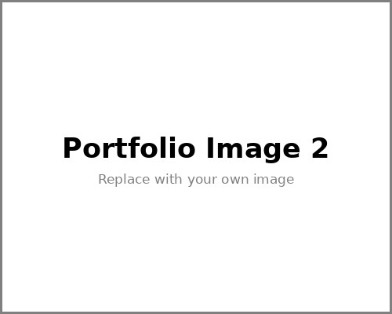

I am an Economics student at the University of California, Riverside with academic interests in economics, data analysis, business, finance, and technology. Through my coursework and professional experiences, I have developed a strong interest in understanding how data and economic reasoning can support better business decisions. I enjoy learning how organizations use information to evaluate performance, identify opportunities, understand markets, and solve practical problems. My goal is to continue developing analytical and technical skills that can be applied to real-world economic and business challenges.
At UC Riverside, I have completed coursework in economics, quantitative analysis, finance-related topics, and computer technology. My economics courses have strengthened my understanding of economic theory, quantitative reasoning, business decision-making, financial concepts, and the interpretation of economic information. I have also worked with analytical tools and programming environments including Python, RStudio, Stata, Microsoft Excel, HTML, and CSS. These tools allow me to approach problems from both an economic and data-oriented perspective while continuing to improve my technical confidence.
I am particularly interested in data analysis because it provides a practical way to transform information into useful insights. I enjoy organizing numerical information, identifying patterns, comparing outcomes, and presenting findings clearly. I am continuing to strengthen my programming and analytical skills through coursework and independent projects. My computer science coursework has introduced me to web development and the fundamentals of building digital projects using HTML, CSS, GitHub, and other technologies. Building this portfolio website is one example of how I am combining business-oriented interests with practical technology skills.
Outside of academics, I have gained experience in different working environments that have helped me develop communication, organization, adaptability, and problem-solving skills. I have experience supporting product coordination and communicating information related to factory products and business requirements. This work taught me the importance of accuracy, follow-through, organization, and clear communication between different parties. I have also gained professional experience in Vancouver, where I developed stronger interpersonal, customer service, scheduling, and day-to-day operations skills while working with people from different backgrounds.
One of my strengths is my ability to adapt to new environments and learn new tools quickly. Studying and working in different settings has helped me become more independent, flexible, and comfortable with new responsibilities. I am interested in international and cross-cultural work environments and I value clear communication, practical problem-solving, and continuous learning. In addition to English, I speak Chinese and Korean and have basic Japanese language skills, which further supports my interest in international business environments and communication across cultures.
As I prepare for my professional career, I am interested in opportunities related to economics, business analysis, data analysis, operations, market research, finance-related analysis, and other analytical roles. I am especially interested in positions where I can combine economic knowledge with technology and data to solve practical problems. This website highlights my education, professional experience, technical skills, and selected projects as I continue building my professional portfolio.
• Coordinated product information and requirements between different parties involved in the product process.
• Assisted with communication related to product specifications, production needs, and project updates.
• Organized information carefully to improve communication and reduce misunderstandings during product coordination.
• Supported follow-up activities and helped keep product-related information clear and accessible.
• Developed practical experience in business communication, organization, problem solving, and cross-functional coordination.
• Learned the importance of accuracy and timely communication when multiple people depend on the same information.
• Provided customer service and communicated professionally with clients in a service-oriented environment.
• Assisted with scheduling, organization, preparation, and day-to-day operational tasks.
• Worked with individuals from diverse cultural and professional backgrounds.
• Managed responsibilities independently while maintaining attention to detail and service quality.
• Strengthened communication, time management, organization, and problem-solving skills.
• Built practical experience handling changing requests and prioritizing tasks in a fast-moving work environment.
• Completed quantitative and applied economics coursework involving economic reasoning, financial concepts, and data interpretation.
• Used Python, RStudio, Stata, and Microsoft Excel for academic and analytical work.
• Developed web projects using HTML and CSS as part of computer science coursework.
• Built a small browser-based game project while learning JavaScript-based web technologies.
• Applied analytical reasoning to business, economics, and data-related problems.
• Continued developing the ability to explain quantitative ideas clearly and present project results in an organized format.
My studies at UC Riverside have provided a broad foundation in economics and quantitative reasoning. Through upper-division economics coursework, I have developed experience working with economic concepts, financial analysis, data interpretation, and structured problem solving. I have also taken computer science and education courses that strengthened my digital literacy, communication, organization, and web development skills.
Chinese • Korean • English • Basic Japanese
I am continuing to improve my technical skills through coursework and practice. My goal is not simply to learn individual software tools, but to understand how technology can support better analysis and decision-making. I am especially interested in learning workflows that connect data collection, cleaning, analysis, visualization, and communication. I also value the ability to explain technical or quantitative ideas in simple language so that they can be useful to people with different backgrounds.
The images below are placeholders so that the website is complete and correctly formatted. Replace these files later with your own screenshots, project images, academic work, certificates, or professional photos. Keep the same filenames and you will not need to edit the HTML again.

My professional interests sit at the intersection of economics, business, data, and technology. Economics gives me a framework for thinking about incentives, markets, organizations, trade-offs, and decision-making. Data analysis adds a practical way to test ideas, compare outcomes, identify patterns, and communicate evidence. Technology provides the tools that make this work faster, more organized, and easier to share.
I am interested in entry-level opportunities where I can continue learning while contributing to analytical or operational work. Roles in business analysis, data analysis, operations, market research, economic research, finance-related analysis, and product support are especially interesting to me. I value positions where careful thinking, organization, communication, and learning are important. I am also interested in companies that operate internationally or work with teams from different cultural backgrounds.
In the future, I want to continue improving my programming, spreadsheet, and statistical analysis skills while gaining more experience with real business data. I also want to become more confident in data visualization, reporting, and presenting findings to different audiences. My long-term goal is to build a career where I can combine quantitative reasoning with practical business understanding and strong communication skills.
This website is part of that process. It demonstrates my ability to build and publish a basic professional website using HTML, CSS, Bootstrap, GitHub, and GitHub Pages. It also gives me a place to continue adding academic projects, technical work, certifications, and professional achievements as I develop my career.